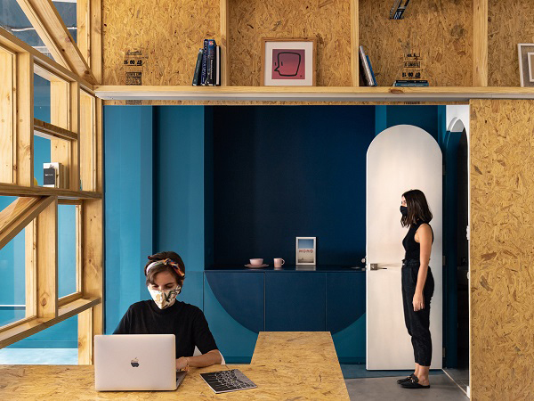
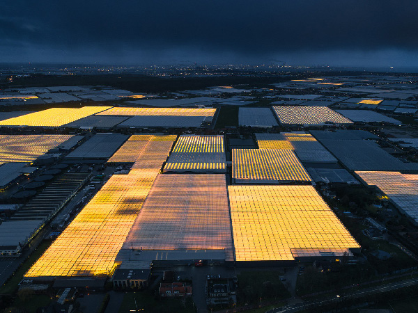
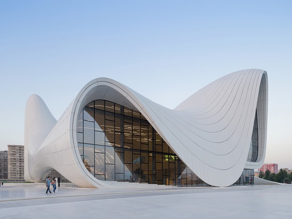
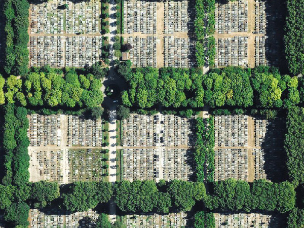

Architecture in the times of Corona
The pandemic has affected every facet of our life, and the architecture
world is no different.
Architects and designers are coming up with innovative new ideas to
survive the post pandemic and the pandemic life we are living.
.... Architects are integrating more
spaces liek verandas, patios in their design because outdoor air is so important now because of the virus.
There is now a new category for architecture design called the corona-compliant. Architects ask each other if their
design is suitable in the world of corona or not. Corona architecture is going to be a hit sooner than later.
Read more
Dutch architecture for agriculture
The dutch are using architectural designs to improve the productivity of their agriculture.
These are interesting times, the merge of architecture and agriculture is going to be very interesting and fruitful.
.... If we go back in time, then we can see that
architecture was infact part of agriculture already, A farmer would have architecture very suitable to his famring techniques
and this farming methods and his farmining lifestyle. He would build barns for better producticity. But what the dutch are doing is extremely
brilliant, they are actually using house that hold just plants and not people, its like another form of greenhouse.
Read more


How did Zaha Hadid change the world?
Zaha Hadid is a star, took too soon away from us. She was a pioneer and changed the world
of architecture forever. She is counted among the five stars of architecture. She must also be the only female architect
....
listed in the top 20 most influential people of the world. He designs were always dynamic. They features extensive curves and dynamic,
almost impossible structures. She went on to create the famous zaha hadid heels aswell. She may be no longer in this world, but her firm continues
in the path laid out by her. They are as innovative as she was and she has taught them well. They are well positioned to carry on her brilliant legacy.
Read more
What can cemetaries teach us about design?
It might seem like a strange idea, to conside cemeteries a form of architecture and design. But there is to be much learned in these planar
form of design, where lays so much of our emotiones and so much importance. ....
We, the people have for centuries placed equal importance and emotional attachment to cemeteries
as we have to temples and churches and places of workship. These temples and churches , to this day, remain an excellent source of magnicient design and architecture.
And cemeteries are no different. They teach you about space organisation and space planning, and if we are to look at different cemeteries around the learn, there is even further knowledge there.
Read more
